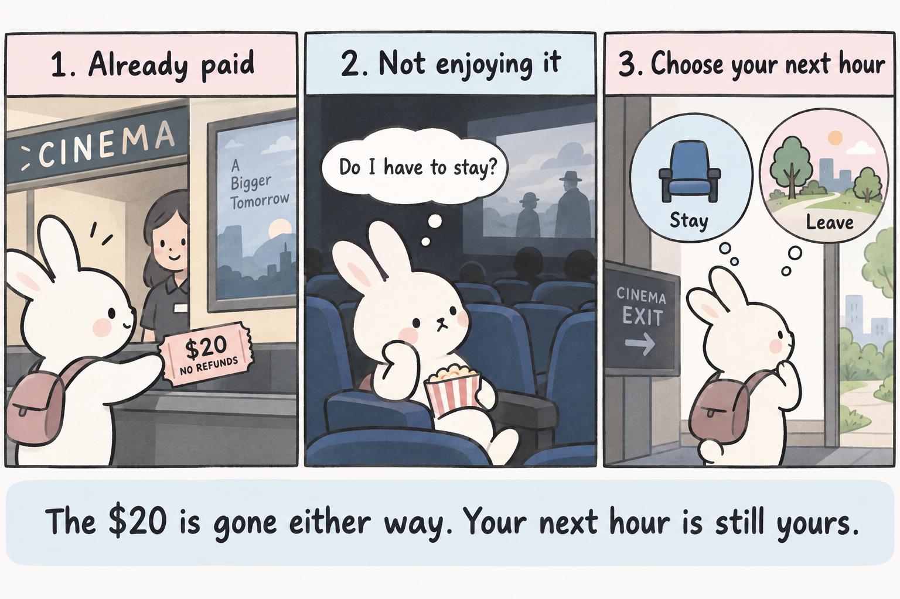
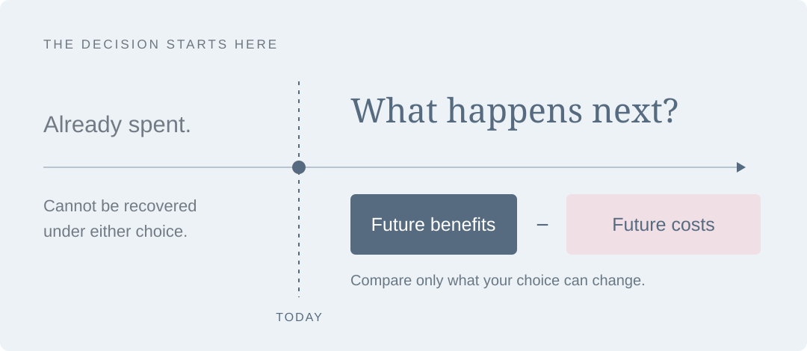

Sunk Costs: Why Past Effort Should Not Decide Your Next Step
“I’ve already put so much into this. I can’t stop now.”
We say it about a disappointing purchase, an unfinished project, or an investment that has gone wrong. Continuing seems to respect the money and effort already spent. Yet economics asks a surprisingly difficult question: if those resources cannot be recovered, why should they determine what we do next?
What is a sunk cost?
A sunk cost is a cost already incurred that cannot be recovered through the choices now available. It can involve money, time, or effort. The defining feature is irreversibility, not how large or painful the cost feels.
You have paid for a nonrefundable ticket, but halfway through, you realize you dislike the film. Whether you stay or leave, the ticket payment is gone. What you can still choose is how to spend the rest of the evening.
Staying cannot recover the payment. If another activity would be more enjoyable, staying only sacrifices more time. That forgone alternative is an opportunity cost: the value of the best option you give up. For more on this example, see OpenStax’s discussion of sunk costs.

Why does ignoring it feel wrong?
We are taught to avoid waste and reward persistence. Leaving the cinema, abandoning a project, or changing direction can feel like admitting that our earlier judgment was wrong. Continuing lets us hope the original effort will eventually be justified.
The confusion is between two questions: “Was my original decision worthwhile?” and “Which choice is better now?” The first evaluates the past; the second guides the future. A bad answer to the first does not automatically make continuing the best answer to the second.
The sunk cost fallacy occurs when an unrecoverable past investment pushes us to continue even though the remaining benefits do not justify the remaining costs. Sunk costs themselves are ordinary; the fallacy is allowing them to distort the next decision.

Three common misunderstandings
“Everything I have already paid is sunk.” Not necessarily. A refundable deposit can still be recovered. Equipment may have resale value. Those recoverable amounts matter because today’s choice determines whether you receive them. What matters is recoverability, rather than simply whether payment happened earlier.
“Ignoring sunk costs means giving up.” No. Suppose finishing a project costs another $40 and produces $70 of benefits. Continuing adds $30 of value, regardless of the unrecoverable amount already spent. If the benefit were only $30, continuing would instead lose another $10. Assume stopping has no further payoff and these figures include all relevant future consequences.
“The past no longer matters.” Past experience can reveal whether a plan works, and previous spending affects the resources you still have. Use that information. Also include future exit penalties, switching costs, and the value of alternatives. Ignoring sunk costs means excluding an irreversible cost from the comparison, not erasing history or ignoring constraints.
One example: waiting for a stock to recover
An investor buys a share for $100; it is now worth $60. “I’ll sell when I break even” makes the purchase price a target, but does not explain why holding is attractive today.
The share still has $60 of sale value, so the asset is not entirely sunk. Holding means choosing to keep that $60 invested. The decision should compare future prospects, risk, alternatives, and relevant costs. A price decline alone proves neither that selling nor holding is best.
This hypothetical example compares holding with selling for $60 and keeping cash for one year. It excludes dividends, interest, taxes, trading costs, and risk adjustment. Changing only the purchase price changes historical profit or loss, but not the expected advantage of holding over selling. Changing the expected future price can reverse that comparison.
Why this matters outside investing
The same reasoning helps us reconsider a study method, a business project, or how we spend an evening. Hours already spent cannot be reclaimed, but the next hour can still be used well. Before continuing, identify what is unrecoverable, compare the remaining options, and include what each option requires you to give up.
The lesson is not to quit sooner. It is to choose the next step for what it can achieve. Past effort deserves reflection; future effort needs a reason.
Source and illustration. Definition and movie example: OpenStax, Principles of Economics 3e, §2.1, “Sunk Costs” (read the section). Numerical examples and the interactive illustration are hypothetical, not market data. The movie comic was created with AI assistance to illustrate the same principle. Editable article and widget: blog/posts/post1/; illustrations: images/blog1/ in the website repository. Rendering instructions are in its README.